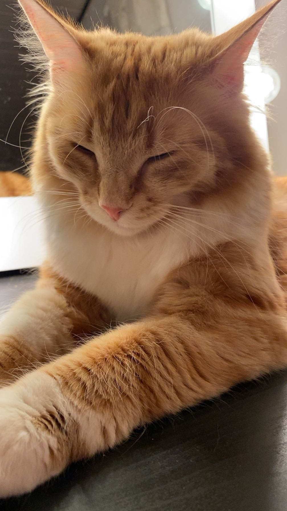

Hei! Olen Jenni Malinen
Opiskelen ohjelmistokehittäjäksi
Tervetuloa nettisivulleni tutustumaan minuun, kiinnostuksenkohteisiini ja projekteihini!
Tietoa minusta
Harrastan tällä hetkellä kahta eri tanssia. Vapaa-ajalla tykkään panostaa hyvinvointiini. Minulla on kissa nimeltä Saku, joka näkyy kuvassa. Tykkään haastaa ja kehittää itseäni erilaisissa asioissa.
